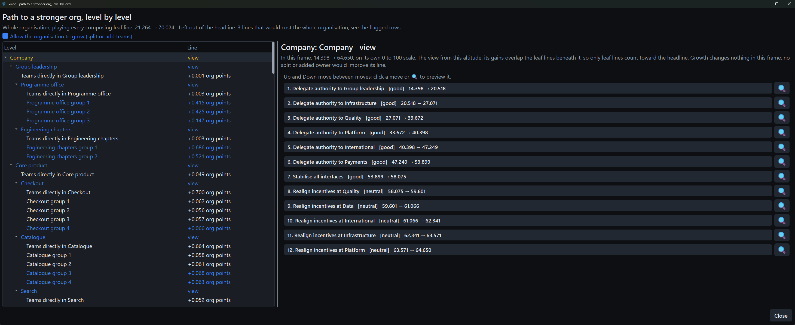
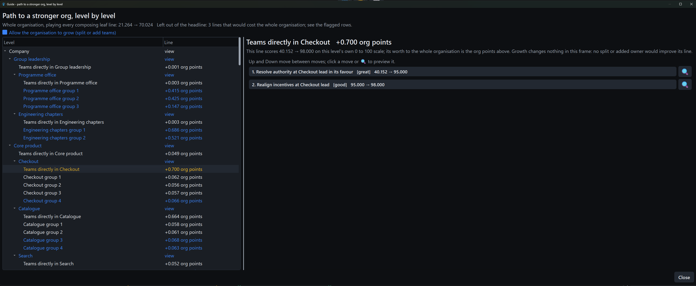
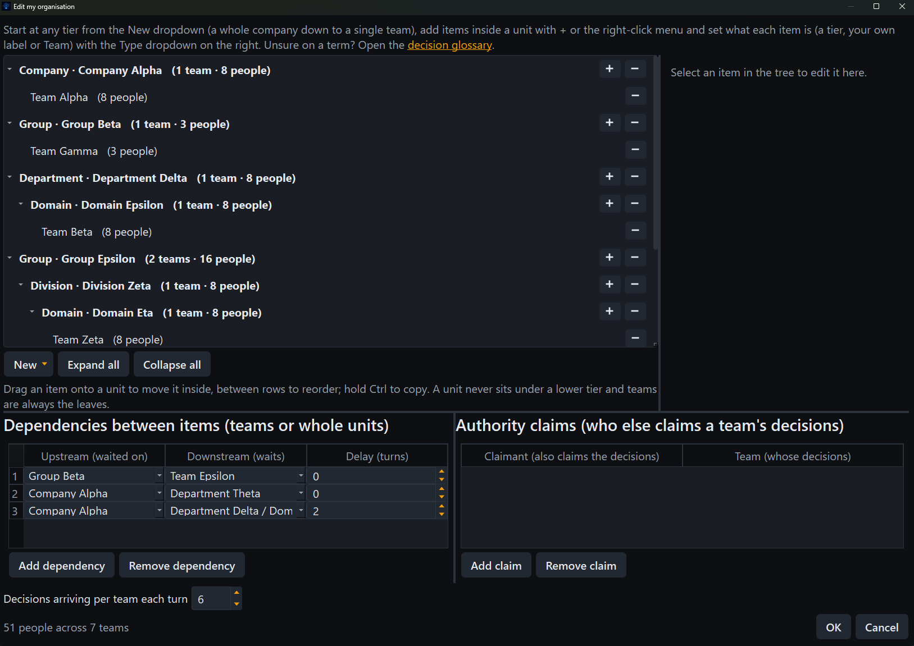

Fulcrum
FulcrumA model you can hold
Decision Architecture argues that organisations succeed or fail by their structure, not by effort. Fulcrum turns that argument into an engine you operate directly: the decision objects, authority worldlines and structural moves from the books, scored live by a deterministic model.
Structural moves
Delegate authority, stabilise interfaces, realign incentives, collapse a boundary or resolve a contested decision class to a single owner. Every move is scored from blunder to great.
Signals to watch
Handoff queue age, escalations, rework, influence without authority, contested ownership, centre escalation load and unowned interfaces: the lagging indicators, each with its own definition.
A guide for every level
The guide plans the whole hierarchy at once: each unit's line in its own frame, with the leaf lines composing into an honest whole-org climb, the way an engine shows its line at every depth.
Yours, on your machine
Generate a level, model your own organisation or import one as JSON. There is no account and no server; nothing leaves your machine.
Watch a score climb, move by move
Load an organisation and the board scores its structural health, maps who decides locally against who escalates and lists every move open to you.



Draw the org you actually have
A two-pane editor keeps the structure visible while you build it: units nest to any depth with teams as the leaves, and an inspector edits whatever is selected.

From a played line to a plan you can send
One click exports the moves you played as a self-contained HTML report: the health change, before and after maps and a recommendation section addressed to each unit's lead, each move justified by the signal it eased. This is a real export, embedded here as shipped.